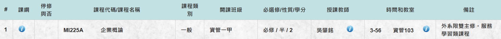

課程介紹
課程代碼:M1225A 課程名稱:企業概論 開課教師:吳肇銘 學分數:2學分 開課系級:資管一甲 必/選修:必修

課程規劃
- 提升學生專業能力：藉由專業課程融合專案實作、服務學習結合資訊科技，讓學生從做中學、學中做，提升未來競爭力。
- 培養學生知識責任：透過團隊學習、企業實做、問題解決、提案競賽方式等，讓學生充分瞭解「知識責任」重要性。
- 拓展本校與外界之社會關係：讓大學生學習以「社會企業」的角色接觸相關基金會、非營利組織，建立本校師生與外界資源多方面合作關係。
課程目標
- 培養學生面對問題、解決問題、專業應用的能力
- 建立學生以專業關懷社會、協助弱勢的行為態度
- 以社會企業模式，實際規劃企業之創立與運作
- 具備服務學習與社會關懷之能力
- 瞭解企業的基本功能與運作
- 資源多方面合作關係
課程評分方式
- 創新（創意及創業能力）20%
- 關懷（具備服務學習與社會關懷之能力）20%
- 熱誠（主動挑戰自我，面對壓力、調節壓力）30%
- 溝通（有效溝通及團隊執行工作）30%
預期學生專業成長描述
學生從服務場域資料收集，進行SWOT分析，規劃服務學習行銷活動、服務場域的行銷企畫書撰寫、團隊組織的溝通領導、服務活動的資源協調、進行服務學習活動的控制與服務學習行銷成果呈現等方面，都能透過服務學習而得到實作的訓練。